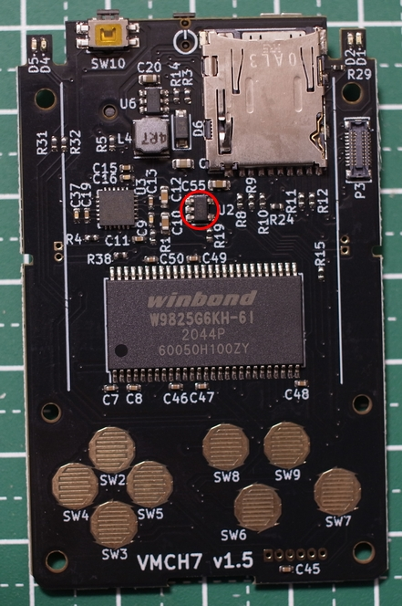

緊急告知!
お買い上げいただいたVMCですが、USBへの電源ON/OFFを繰り返して
いるとPMICが壊れて電源が入らなくなる可能性が判明しました。
★PMIC破損時に非常に高温になる場合がございます。怪我、火災などに十分ご注意ください★
事前に原因となる下記のICを除去をお願いいたします。このICを除去しても
VMCの動作には影響ありません。
誠に申し訳ございません。
対象となるのは表面U2という表記のあるIC(下記の赤丸)です。

ICの足を精密ニッパーで切るのが簡単です
はんだごてを2本使っても可能です。下記のようになればOKです。
ICは廃棄してかまいません。もし既に電源が入らなくなってしまった場合には問
い合わせ先にご連絡ください。
何故動作に影響の無いICを付けているのかと申しますと、このICはUSBがOTGの場合にVMCからUSB機器に電源を供給するための
ゲートICです。
将来、ファームウェアアップで、外付けのJoyStickなどからVMCを制御できるようにする予定でした。
しかし、何らかの影響でこのICが破損するとゲートの機能が果たせなくなり、電源がループします。その結果、PMICが破損します。
そのため、今回はOTG対応は諦めて安全側に倒すことにいたします。誠に申し訳ございません。
VMCとは
Visual Memory筐体に、第6世代iPod nanoを入れ、MP3プレーヤーにしている方がいらっしゃいました。
せっかくなので、MP3プレイヤーだけでなく、ゲームもできた方が楽しいですよね？
というコンセプトでVisual MemoryのConsoleということで制作しました。略してVMCと呼んでおります。
イベントにてVMCを公開したところ、多くの方から、「自分も遊びたいので売ってほしい」
という声をいただき、キットの形で販売することにいたしました。
スペック
CPU : STM32H747 Cortex-M7 480MHz、Cortex-M4 240MHz Dual Core
、Flash ROM 2M、RAM 1MB
RAM : W9825G6KH-6I 133MHz/CL2 SDRAM 32MB
Display : H163QLN01 1.63inch 320x320 有機EL
DAC : ALC5628 I2S Stereo DAC、45mW Headphone AMP、 2.4W
Speaker AMP
初期ファームウェアについて
初期ファームウェアは動作確認用にMP3プレイヤーが入っています。
組み立てた後はダウンロード方法に従って適宜ファームウェアを書き換えてください。
使用上の注意
- 使用するデータによっては正常に動作しない可能性があります
- この機器の使用により不具合が生じても、当方では一切その責任を負いかねます
- お問い合わせは、下記へお願いいたします。
Twitterアカウント：@SMD_Koubou
Eメール：smdkoubou@gmail.com
紹介動画
購入先について
家電のケンちゃんにて販売しております。
Visual Memory Console
在庫切れの場合は入荷待ち登録をしてくださるようお願いいたします。
更新情報・お知らせ
- 2021/05/16
- MSX Emulator Ver1.2をリリース
- 2021/05/09
- MSX Emulatorを追加
修正版Ver1.1をリリース
- 2021/04/20
- FAQページにコネクタの購入先を追記
- 2021/04/19
- PC Engine Emulatorを修正
- 2021/04/18
- PC Engine Emulatorを追加
- 2021/03/14
- [FAQ]タブ作成し、部品購入先を追記
- 2021/02/23
- ディスプレイ(有機EL)の破損対策を[組み立て方]に追記
- 2021/02/14
- 緊急告知追加